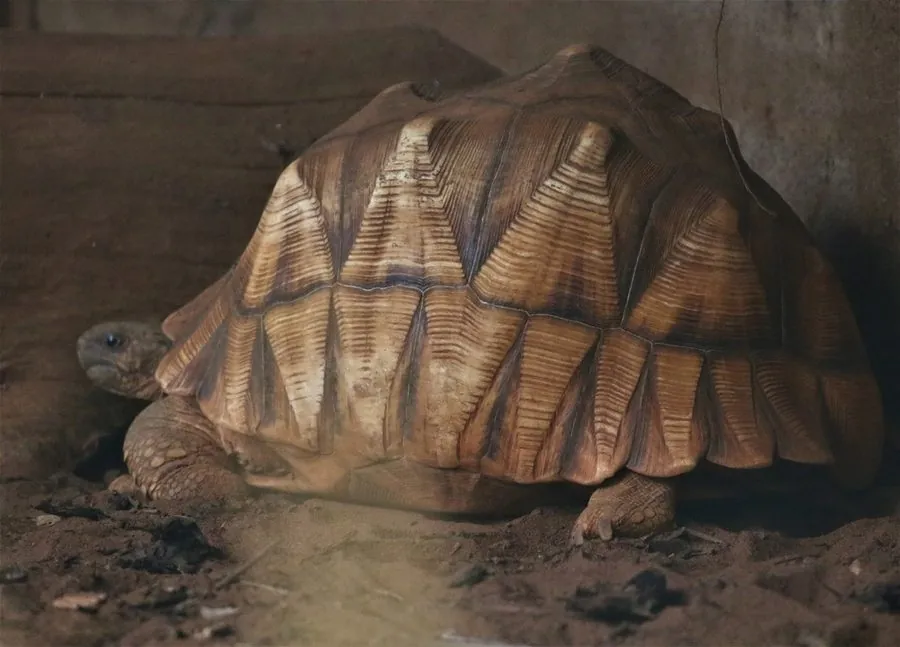

爬行动物 · 动物界
安哥洛卡象龟 Astrochelys yniphora

马达加斯加西北部特有的陆龟，雄龟腹甲前端伸出犁头状突起用于争斗，全球野生个体仅数百只，是最濒危的龟类之一。
- 分类
- 门脊索动物门纲爬行纲目龟鳖目科陆龟科属星丛龟属
- 栖息环境
- 马达加斯加西北部的干旱疏林、棕榈灌丛与沙质土壤坡地
- 地理分布
- 马达加斯加西北部巴利湾附近的狭窄区域
- 保护级别
- IUCN 极危（CR）；CITES 附录Ⅰ
物种志
安哥洛卡象龟背甲长可达 40 厘米，体重 8–20 千克，背甲高隆呈棕褐色，盾片上有明显的同心生长纹，缘盾略微上翘。最奇特的是雄龟的腹甲前端延伸出一块长而弯曲的板状突起，形似犁头，故得名“犁头龟”；这块突起在争夺配偶时用于顶翻对手。雌龟的腹甲平坦，突起不明显。
它们仅分布于马达加斯加西北部一小片干旱林与棕榈灌丛中，栖息于沙质土壤的疏林地带，多在清晨与傍晚活动，以草、嫩枝、果实和腐肉为食。繁殖率极低，雌龟每季仅产 1–6 枚卵，孵化期长达 6–8 个月，幼龟成活率不高。由于栖息地被开垦为农田、长期遭偷猎走私，其野生种群在近几十年急剧萎缩，目前野生个体仅数百只，成为全球最濒危的龟类之一。马达加斯加已建立保护区并开展人工繁育与就地保护。
形态与习性
- 背甲长可达 40 cm，体重 8–20 kg
- 食性草、嫩枝、果实、腐肉与动物残骸
- 繁殖每季产 1–6 枚卵，孵化期约 6–8 个月
- 雄龟特征腹甲前端延伸出犁头状长突起，用于争斗
- 活动节律晨昏活动，正午多在灌丛阴影中躲避高温
- 种群现状野生个体估计仅数百只，为全球最濒危龟类之一
- 寿命可达 100 年以上
趣味知识
- 雄龟腹甲前端长着一块像犁头的长板，打斗时用来顶翻对手。
- 全球野生安哥洛卡象龟只剩几百只，比大熊猫还要稀少。
- 它每季只产几枚卵，孵化要半年以上，种群恢复极其缓慢。